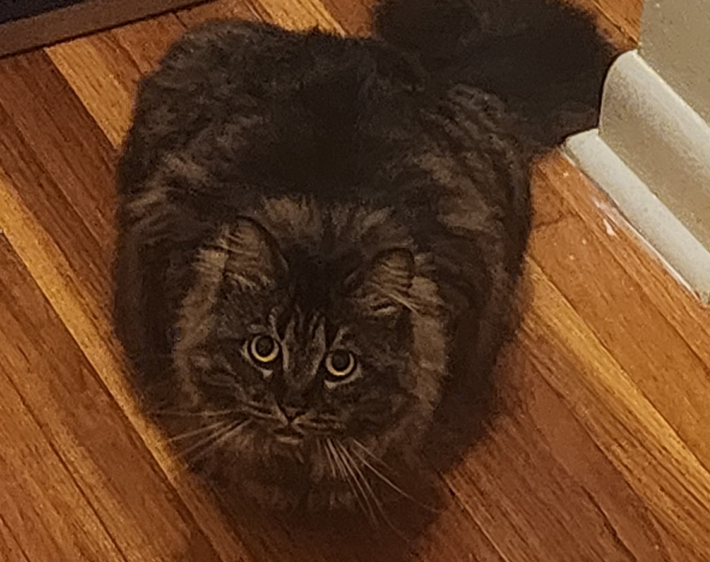

I understand that what I put here is publicly available on the web and I won’t put anything here I don’t want the public to see - NDM - 3/31/2026

I’m a junior at UNC Charlotte studying Computer Science with a focus in Cybersecurity. I’m excited to expand my knowledge in the following semesters on building secure infrastructure and to learn about things like penetration testing.
- Personal Background: I’m currently 22 years old and love hiking, playing video games, and drawing.
- Professional Background: I was lucky enough to get an internship with Triangle Cyber where I learned about their structure and daily operations.
- Academic Background: I’m currently a Junior at UNC Charlotte studying computer science with a focus in Cybersecurity. I’ve previously attended NC State during my freshman year.
- Background in this Subject: I don’t have a lot of experience specifically in Cybersecurity, but I’m eager to learn!
- Primary Work Computer: The laptop I use for university is an Acer Spin 5 running Windows. I use a custom built Windows 10 PC at my apartment.
- Backup Work Computer & Location Plan: I can go to the Atkins Library to borrow a loaner laptop or use my other device as a temporary backup.
- Courses I’m Taking, & Why:
- ITIS3135 - Front-End Web Application Development: Required, has taught me good fundamentals for later Cybersecurity concepts.
- ITSC3155- Software Engineering: Required, interesting class on the cooperative aspect of software design.
- ITCS4231 - Adv Game Design & Development: Class giving me practice in designing and building games, which I enjoy as a hobby.
- CTCM2530 - Interdisciplinary Critical Thinking and Communication: Required course.
- I’d also like to share: My favorite food is popcorn!
“Believe you can and you're halfway there.” — Theodore Roosevelt